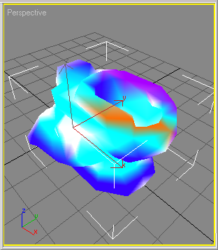
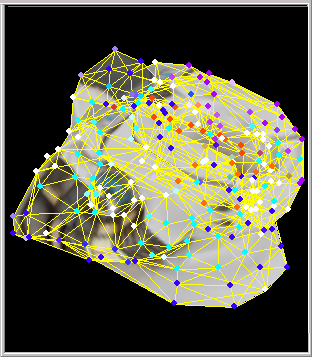
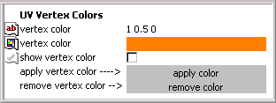
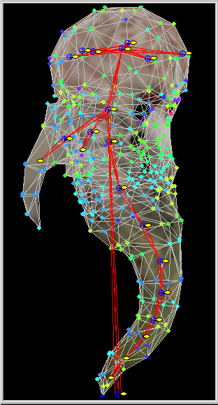

Vertex Coloring and Weights
Updated 27 Jul 2009
- QuArK Information Base
- 1. Introduction to QuArK
- 1.6. Model-editor in QuArK
|
|
Vertex Coloring and Weights
Updated 27 Jul 2009
|
Upper levels: - QuArK Information Base - 1. Introduction to QuArK - 1.6. Model-editor in QuArK |
|
1.6.12. Vertex Coloring and Weights |
[ - - ] |
Some model formats use additional, more advanced, special display and movement systems. |
|
Index |
|
Vertex Coloring |
cdunde - 27 Jul 2009 | [ Top ] |
|
  Vertex Coloring uses actual colors to give a model different lighting effects. These colors are applied directly to the models mesh vertexes as demonstrated in the first screen shot to the right. When the proper graphics displaying is used those vertex colors are spread between each other, from vertex to vertex, of the models mesh triangles to give a hew effect of the colors as shown in the second screen shot to the right. Unfortunately, at this time, QuArK's Model Editor does not have that graphics displaying capabilities. When the model is used in the proper game engine, this hewing will effect various lighting features of that game engine and produce the desired results. QuArK's Model Editor does however supports the color selection, changing, application and removal of the Vertex Coloring system for those kinds of models and game engines. The functions that handle Vertex Coloring are located on the frame Specifics/ Args page and is accessible by selecting a single frame or the Frames folder of a model component and nothing else.  UV Vertex Colors : vertex color : This specific has two lines and methods to select the color you wish to use. show vertex color : When this is checked and if the model has Vertex Coloring, those colors will be displayed, If not the default colors of a vertex will be drawn. apply color : Once you have selected some vertexes by doing a LMB drag click the gray apply color button to give the above chosen color to those vertexes. remove color : Once you have selected some vertexes by doing a LMB drag click the gray remove color button to remove all vertex coloring from those vertexes. |
|
Vertex Weights |
cdunde - 27 Jul 2009 | [ Top ] |
|
Vertex Weights are numerical settings from 0 to 1.0 to give a more natural movement to a model's animation. These values are applied directly to the models mesh vertexes as demonstrated in the screen shot to the far right below. Each value setting has its own distinct color for visualization display and easy identification. This system is used in conjunction with the Bones system and a single vertex can be shared by two or more bones. Multiple component vertexes can also be assigned to bones. All vertexes have a default value of 1.0 when they are assigned to a single bone. When they are shared between bones they MUST have a total value that adds up to 1.0. We will cover on how to accomplish this a little later. But first, let's go over on how to select, apply and set the Vertex Weight Colors. Before using this system you need to assigned some vertexes to a bone. This is done by clicking on a single bone and selecting a component's frame. Then do a LMB drag in one of the editor's views to select the vertexes. Then do a RMB click over the center of the bone to get the Bones Commands Menu and select Assign \ Release Vertices.  Once the vertexes are assigned you need to get into the Vertex Weight Colors mode. This is done by clicking on the icon button that looks like a Paint Brush near the top of the Bones Specifics/ Args page. To get out of the mode just click it again. You are now ready to select and assign weight values to some vertexes. This is done in one of two ways. The settings for a particular bone are done on the
Bones Specifics/ Args page,
as shown below, in the bottom two sections. This page is displayed when a single bone and frame, or multiple
frames are selected.
The first set of these settings are also located on the frame Specifics/ Args page for easer access when a single or multiple frames are selected. use weight bone sel : When checked, it puts bone selection into a special mode allowing you to add or remove bones to the selection without having to use the 'Ctrl' key. show_weight_color : When checked, if component has vertex weight coloring they will show. If NOT checked and it has bones with vetexes, those will show. apply_vtx_weights : When checked, applies all bone weight settings for any currently or additional selected vertexes using the linear handle or applied by the paint brush. The second set of settings apply to the actual weight value for that particular bone and the selected component. (bone name) weight (value) : Set this vertex's weight here. Total values for this vertex MUST = 1.0. (bone name) weight (color) : Color used for this component's vertex weight color mapping. You can not change this color, use button above. After the above process, changing the bone's weight value and doing another LMB drag or Painting of just some of those vertexes will change the value and color for them alone. Or for individual vertexes you can use the Vertex Weights Dialog shown below. Vertex Weights Dialog : At the very top of this dialog is the name of the Component: that is currently selected and that these vertexes belong to. At both the top and bottom of the dialog is the Vertex weights page which is a dropdown list, click the down arrow. This list gives the page number, the first vertex shown on the page and the last vertex shown on the page. In between are the listings for each vertex which displays the Vtx \ Bone:, vertex number and bone name and Weight value: for that bone. You will notice that each vertex section's values add up to 1.0, as stated in the above section, that they must do to be valid. To the right of each Weight value: is an arrow button which can be used to increase or decrease these values or you can enter a value by hand. However, it will not change the other values for that vertex, so that will need to be done by the user to add up to 1.0 as before. Near the bottom of the dialog are a few more button features. select vertexes : If a bone is selected only its weighted vertexes will be selected. If not, all weighted vertexes will be selected. This applies for each individual page. update dialog : When more vertexes are assigned between bones, or other actions take place that would effect these items, this dialog will update automatically. Or you can click this button to update it any time you wish. apply changes : At any time, you can click this button to ensure that settings made thus far are saved. This will also place them on the undo list for easy interval reversal. If you wish to save all changes as they are made check the option auto apply changes on the Bones Specifics/ Args page. After an undo you MUST click the update dialog button to reload the old settings. auto save : When checked, all displayed settings will be saved when ever this dialog is closed or switches components only. To constantly save changes, once they are made, check the auto apply changes option on the Bones Specifics/ Args page. (the) X (close dialog) : Will simply close the dialog without making any changes or saves. |
|
Copyright (c) 2009, GNU General Public License by The QuArK (Quake Army Knife) Community - http://quark.sourceforge.net/ |
[ - Top - ] |